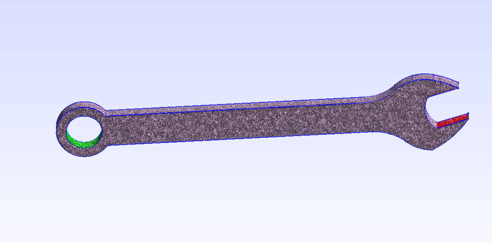
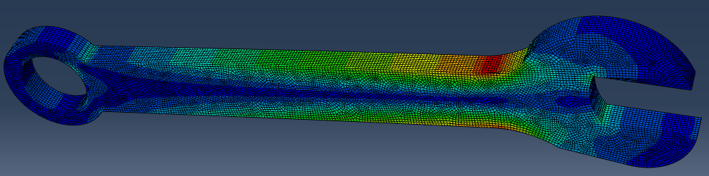
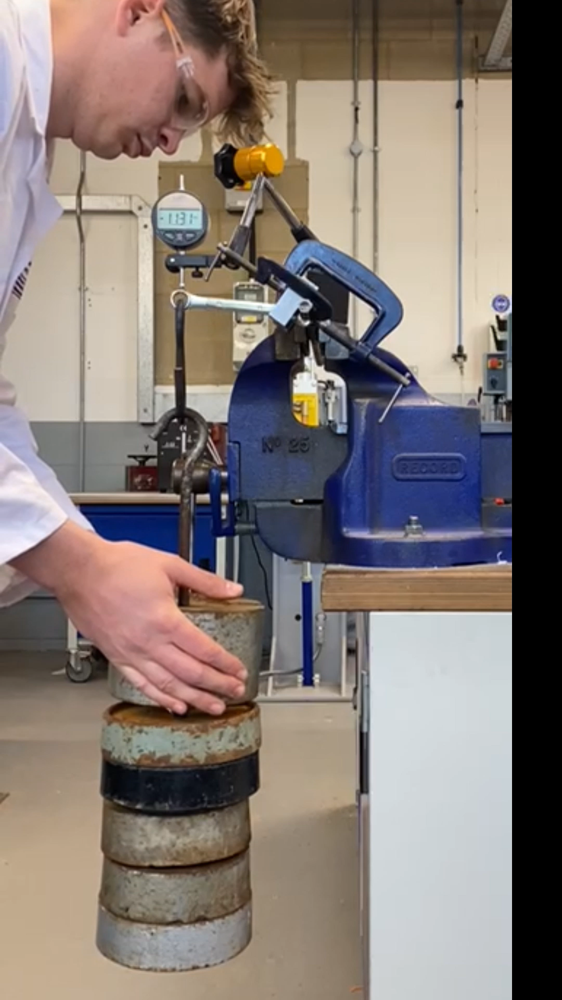
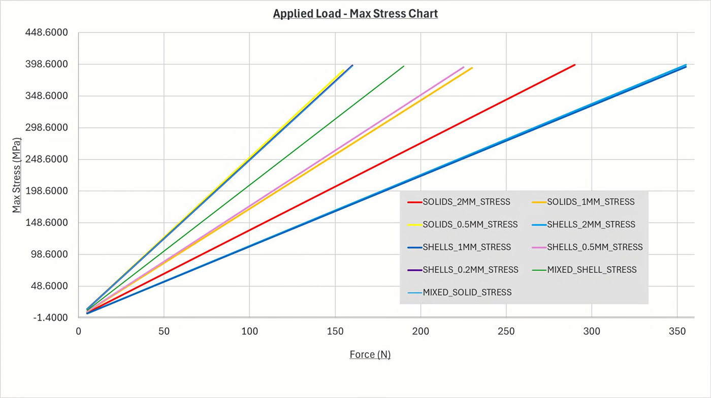

My contribution — Python FEA from scratch
While teammates ran the commercial packages and the experiment, I built the open-source numerical models in Python, with no commercial licence — full control over meshing, element assembly, boundary conditions and post-processing.
2D beam idealisation
- Implemented a 2-node Euler–Bernoulli beam element (2 DOF per node) in Python, idealising the 108 mm spanner as a cantilever with a tip load.
- Ran a convergence study from 1 to 100 elements; because the cubic shape functions exactly reproduce a cantilever's deflection field, even one element was exact — the residual fluctuations were just floating-point noise, which I identified and explained.
- Extended it to a variable cross-section beam to better match the real geometry.
3D tetrahedral FEA

- Imported the 3D geometry into gmsh and generated a second-order (tetra10) mesh — 42,874 elements / 70,949 nodes — chosen because linear tetrahedra are over-stiff and underestimate stress near the jaw fillet radii.
- Assembled and solved the system in scikit-fem, with the jaw inner faces fully fixed and a distributed load on the ring.
- Under a 100 N load: peak tip displacement 0.43 mm and maximum von Mises stress of 112.2 MPa at the jaw–handle transition — the critical stress-concentration region — giving an estimated SWL of 180 N at a factor of safety of 2.
The wider study
The team approached the same problem from every angle so the methods could be cross-checked:
- Material: the £3.95 drop-forged spanner was approximated as AISI 1030 steel (E = 208 GPa, yield 395 MPa) using Ansys Granta EduPack; failure was defined as the onset of yielding.
- Analytical: Euler–Bernoulli beam theory with a Peterson stress-concentration factor, verified by slenderness ratio, Timoshenko correction and small-deflection checks.
- Commercial / non-commercial FEA: ANSYS (shell & solid) and SimScale, with mesh studies refining the spanner head.
- Experiment: a rig clamping a hex bar as the "bolt", loading the ring through a hook while a dial test indicator measured deflection.


Results & validation
The physical spanner yielded at ~157 N. The key insight from comparing all five methods: second-order FEA with realistic boundary conditions (ANSYS, SimScale) matched the experiment closely, while the analytical and simplified models over-predicted strength — which would be dangerous if trusted for a real SWL.

| Method | Yield force (N) | Safe working load (N) |
|---|---|---|
| Physical testing | 157 | 80 |
| ANSYS (validated) | 160 | 80 |
| SimScale | 158 | 74 |
| My Python 3D tetra | 360 | 180 |
| Analytical beam | 385 | 193 |
| Abaqus | 270 | 135 |
The group's final SWL of 80 N (factor of safety 2 on the ~157–160 N validated yield) was based on the methods that matched reality. My 3D model over-predicted yield because its fully-constrained faces and distributed load are stiffer than the real clamped joint — a limitation I analysed and proposed fixes for (contact modelling of the bolt, point loading, better material characterisation).
Skills demonstrated
- Built FEA in Python end-to-end — meshing in gmsh, assembly/solve in scikit-fem — not just driving a GUI.
- Understood why element order and boundary conditions decide whether a result is trustworthy.
- Honest comparison against experiment and four other methods, including diagnosing why my own model disagreed.
- Worked as one of six, owning a clearly-defined technical slice of a larger study.